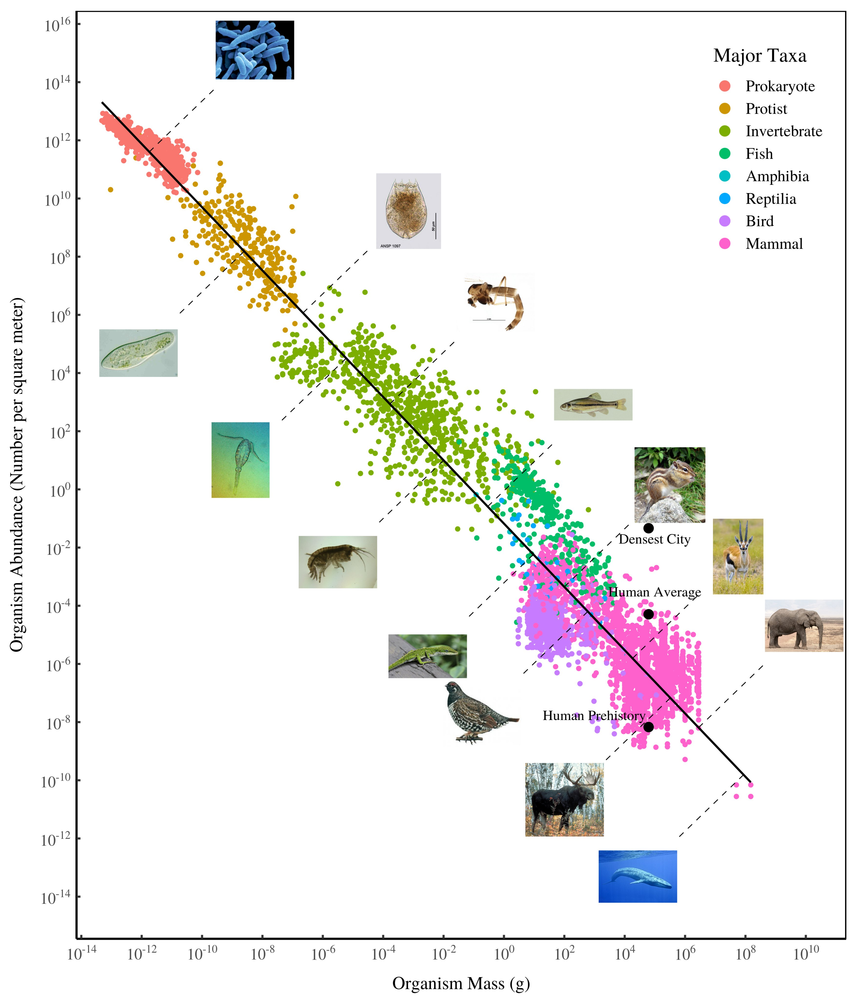

5 Evolution
5.1 Organization of Life
The conflict between lower-level selfishness and higher-level welfare pervades the biological world. Cancer cells selfishly spread at the expense of other cells within the body, without contributing to the common good, ultimately resulting in the death of the whole organism. In many animal societies, the dominant individuals act more like tyrants than wise leaders, taking as much as they can for themselves until deposed by the next tyrant. Single species can ravage entire ecosystems for nobody’s benefit but their own.
But goodness has its own advantages, especially when those who behave for the good of their groups are able to band together and avoid the depredations of the selfish. Punishment is also a powerful weapon against selfishness, although it is often costly to wield. Every once in a great while, the good manage to decisively suppress selfishness within their ranks. Then something extraordinary happens. The group becomes a higher-level organism. Nucleated cells did not evolve by small mutational steps from bacterial cells but as groups of cooperating bacteria. Likewise, multi-cellular organisms are groups of highly cooperative cells, and the insects of social insect colonies, while physically separate, coordinate their activities so well that they qualify as super-organisms. Life itself might have originated as groups of cooperating molecular reactions.
Only recently have scientists begun to realize that human evolution represents a similar transition. In most primate species, members of groups cooperate to a degree but are also each other’s main rivals. Our ancestors evolved to suppress self-serving behaviors that are destructive for the group, at least for the most part, so that the main way to succeed was as a group. Teamwork became the signature adaptation of our species.
Extant hunter-gatherer societies still reflect the kind of teamwork that existed among our ancestors for thousands of generations. Individuals cannot achieve high status by throwing their weight around but only by cultivating a good reputation among their peers. Most of human moral psychology – including its other-oriented elements such as solidarity, love, trust, empathy, and sympathy, and its coercive elements such as social norms enforced by punishment – can be understood as products of genetic evolution operating among groups, favoring those that exhibited the greatest teamwork.
From Genes to Culture
Teamwork in our ancestors included physical activities such as childcare, hunting and gathering, and offense and defense against other groups. Human teamwork also acquired a mental dimension including an ability to transmit learned information across generations that surpasses any other species. This enabled our ancestors to adapt to their environments much more quickly than by the slow process of genetic evolution. They spread over the globe, occupying all climatic zones and hundreds of ecological niches. The diversity of human cultures is the cultural equivalent of the major genetic adaptive radiations in dinosaurs, birds, and mammals. The invention of agriculture initiated a positive feedback process between population size and the ability to produce food leading to the mega-societies of today.
Cultural evolution differs from genetic evolution in important respects but not in the problem that lurks at every rung of the social ladder. Just like genetic traits, cultural traits can spread by benefitting lower-level units at the expense of the higher-level good – or by contributing to the higher-level good. There can be cultural cancers, no less so than genetic cancers. And for teamwork to exist at any given rung of the social ladder, there must be mechanisms that hold the wolves of selfishness at bay. A nation or the global village is no different in this respect than a human village, a hunter-gatherer group, an ant colony, a multi-cellular organism, or a nucleated cell.
Modern nations differ greatly in how well they function at the national scale. Some manage their affairs efficiently for the benefit of all their citizens. They qualify at least as crude superorganisms. Other nations are as dysfunctional as a cancer-ridden patient or an ecosystem ravaged by a single species. Whatever teamwork exists is at a smaller scale, such as a group of elites exploiting the nation for its own benefit. The nations that work have safeguards that prevent exploitation from within, like scaled-up villages. The nations that don’t work will probably never work unless similar safeguards are implemented.
Accomplishing teamwork at the level of a nation is hard enough, but it isn’t good enough because there is one more rung in the social ladder. Although many nations have a long way to go before they serve their own citizens well, a nation can be as good as gold to its own citizens and still be a selfish member of the global village. In fact, there are many examples in the international arena, where nations protect their own perceived interests at expense of the common global future.
5.2 Intentional Evolution
The Evolutionary Manifesto
Cooperative Evolutionary Transitions
Abstract Stewart
Major Cooperative Evolutionary Transitions occur when smaller-scale entities cooperate together to give rise to larger-scale entities that evolve and adapt as coherent wholes. Key examples of cooperative transitions are the emergence of the complex eukaryote cell from communities of simpler cells, the transition from eukaryote cells to multicellular organisms, and the organization of humans into complex, modern societies. A number of attempts have been made to develop a general theory of the major cooperative transitions. This paper begins by critiquing key aspects of these previous attempts. Largely, these attempts comprise poorly-integrated collections of separate models that were each originally developed to explain particular transitions. In contrast, this paper sets out to identify processes that are common to all cooperative transitions. It develops an alternative theoretical framework known as Management Theory. This general framework suggests that all major cooperative transitions are the result of the emergence of powerful, evolvable ‘managers’ that derive benefit from using their power to organize smaller-scale entities into larger-scale cooperatives. Management Theory is a contribution to the development of a general, “all levels” understanding of major cooperative transitions that is capable of identifying those features that are level-specific, those that are common across levels and those that are involved in trends across levels.
5.3 Metabolic Scaling
Hatton
Metabolic scaling theory has had a profound influence on ecology, but the core links between species characteristics have not been formally tested across the full domain to which the theory claims to apply. We compiled datasets spanning all eukaryotes for the foremost body mass scaling laws: metabolism, abundance, growth, and mortality. We show that metabolism and abundance scaling only follow the canonical ±3/4 slopes within some taxonomic groups, but across eukaryotes reveal reciprocal near ±1 slopes, broadly supporting the “energetic equivalence rule.” In contrast to metabolism, growth follows consistent ∼3/4 scaling within many groups and across all eukaryotes. Our findings are incompatible with a metabolic basis for growth scaling and instead point to growth dynamics as foundational to biological scaling.
Scaling laws relating body mass to species characteristics are among the most universal quantitative patterns in biology. Within major taxonomic groups, the 4 key ecological variables of metabolism, abundance, growth, and mortality are often well described by power laws with exponents near 3/4 or related to that value, a commonality often attributed to biophysical constraints on metabolism. However, metabolic scaling theories remain widely debated, and the links among the 4 variables have never been formally tested across the full domain of eukaryote life, to which prevailing theory applies. Here we present datasets of unprecedented scope to examine these 4 scaling laws across all eukaryotes and link them to test whether their combinations support theoretical expectations. We find that metabolism and abundance scale with body size in a remarkably reciprocal fashion, with exponents near ±3/4 within groups, as expected from metabolic theory, but with exponents near ±1 across all groups. This reciprocal scaling supports “energetic equivalence” across eukaryotes, which hypothesizes that the partitioning of energy in space across species does not vary significantly with body size. In contrast, growth and mortality rates scale similarly both within and across groups, with exponents of ±1/4. These findings are inconsistent with a metabolic basis for growth and mortality scaling across eukaryotes. We propose that rather than limiting growth, metabolism adjusts to the needs of growth within major groups, and that growth dynamics may offer a viable theoretical basis to biological scaling.

5.4 Hiarchies
Turchin
One of the greatest puzzles of human evolutionary history concerns the how and why of the transition from small-scale, ‘simple’ socie- ties to large-scale, hierarchically complex ones. Multilevel selection suggests that complex hierarchies can arise in response to selection imposed by intergroup conflict.
People living in small-scale societies are fiercely egalitarian and use a variety of ‘leveling institutions to reduce inequality. Complex societies are vastly inegalitarian.
Small-scale societies have simple structure. Thus, local communities may be grouped in larger units (‘tribes’), but usually there are no levels of organization above that, and there are no permanent control centers. Complex societies, on the other hand, are centralized and have many levels of hierarchical organization. Complex societies have states – coercion-wielding hierarchical organizations managed by administrative specialists (bureaucracies). There is a strong correlation between hierarchical complexity and state organization.
Multilevel Selection
The theory of multilevel selection provides insights into the evolu- tion of such traits as altruism that are subject to conflicting selec- tion pressures. In the pithy characterization of D. S. Wilson and E. O. Wilson (2007),
‘Selfishness beats altruism within groups. Altruistic groups beat selfish groups’.
Whether altruism spreads in the population, or not, depends on the balance of within-group (in- dividual level) and between-group (higher level) selection forces.
Human groups need to be well-integrated by within- group cooperation in order to effectively compete against other groups.
There are biological limits on the size of an egalitarian group, in which the basis of cooperation is face-to-face interactions. The main limit has to do with the size of the human brain.
According to the ‘social brain’ hypothesis the evolution of human brain size and intelligence during the Pleistocene was largely driven by selective forces arising from intense competition between individuals for increased social and reproductive success. One can view language as a tool that originally emerged for simplifying the formation and improving the efficiency of coalitions and alliances.
The huge and energetically demanding brains of humans, ac- cording to this theory, evolved in order to store and process large amounts of social data. To function well in a social group an indi- vidual needs to remember who did favors for whom and, alterna- tively, who cheated whom. One must be able to calculate the po- tential ramifications of one’s actions towards another individual and how it will affect the relationships with third parties. The prob- lem is, as the group increases in size, the potential number of rela- tionships that one must keep in mind grows exponentially. Once a human group attains the size of roughly 150 individuals, even the hypertrophied human brain becomes overwhelmed. For group size to increase beyond the few hundred individuals typical of small-scale human societies, evolution had to break through the barriers imposed by face-to-face sociality.
Humans evolved the capacity to demarcate group membership with symbolic markers. Markers such as dialect and language, clothing, ornamentation, and religion allowed humans to determine whether someone personally unknown to them was a member of their cooperating group or, vice versa, an alien and therefore an enemy.
The second evolutionary innovation was hierarchical organization. The elementary building block for hierarchical organizations is a bond between a superior and an inferior ‘agents’. If agents are individual humans, then this relationship takes the form of one between a leader and a follower, or a lord and a vassal. The growth of hierarchies occurs primarily by adding extra levels of organization and, therefore, is not limited by social channel capacity. Any member of a hierarchy needs to have a face-to-face relationship only with, at most, \(n + 1\) persons: the maximum number of subordi- nates (the ‘span of control’), \(n\), plus an additional link to its own superior. Hierarchical societies are also not limited by social channel capacity, and can potentially reach any size, as long as it is possible to add new hierarchical levels.
An acephalous tribe is the largest social scale a human group can achieve without the benefit of centralized organization. Greater social complexity requires leaders – chiefs, kings, caliphs, presidents, prime ministers, or politburo chairmen.
Adding extra levels of social organization beyond a complex chiefdom usually requires transition to a more formal political or- ganization – the state.
The state ischaracterized by a formal division of labor: separate organizations specializing in administration (a bureaucracy), coer- cion (an army), law (a judiciary), and religion (a church).
Large-scale hierarchically complex societies arose as a result of evolutionary pressures brought on by warfare. As Charles Tilly (1975) famously said, ‘states made war, and war made states’
The key insight from evolutionary theory (and, specifically, multilevel selection) is that warfare is an extreme form of parochial altruism, driven by the ‘cooperate to compete’ evolutionary logic.
Up until the present the force driving the evolution of increased social scale has always been competition/conflict in opposition to some other societies. If the global state were to arise, where will it find the external threat that would keep it unified?
Unless (or until) the humanity experiences a major evolutionary breakthrough that will provide a different basis for large-scale cooperation, the rise of a stable state unifying all humanity is unlikely.
The history of the European Union (EU), a most audacious and innovative experiment in building a supranational community, ap- pears to support this pessimistic conclusion. Two reasons for the apparent reversal of the integrative dynamic in Europe. First, adversarial relations with the Soviet block (the ‘Evil Empire’) helped to suppress internal bickering among the member states. Second, rapid expansion into Central and Eastern Europe, by simply adding new members in a completely unstructured way, was clearly a mistake, as lasting increase in social scale can be accomplished only by adding extra layers of hierarchical organization.
Without an international authority possessing sufficient coercive power to hold individual states in check, great powers will continue their attempts to gain power at each other’s expense leading, inevitably, to interstate rivalry and war.
All through the history, and for the foreseeable future, integration among humans required conflict against other humans. Even if a world-wide state were to arise, according to this logic, it would rapidly fission into multiple parts. On the other hand, neither history nor evolution is destiny. Humans have transcended their evolutionary limitations before.